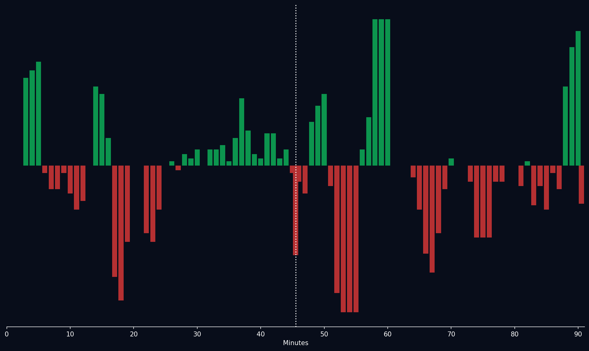
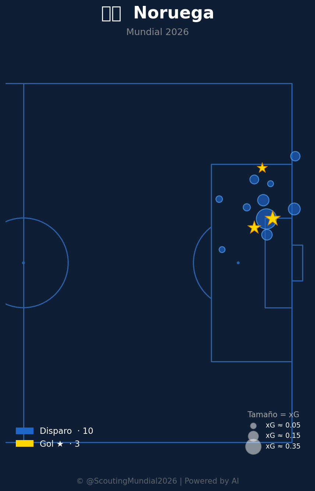
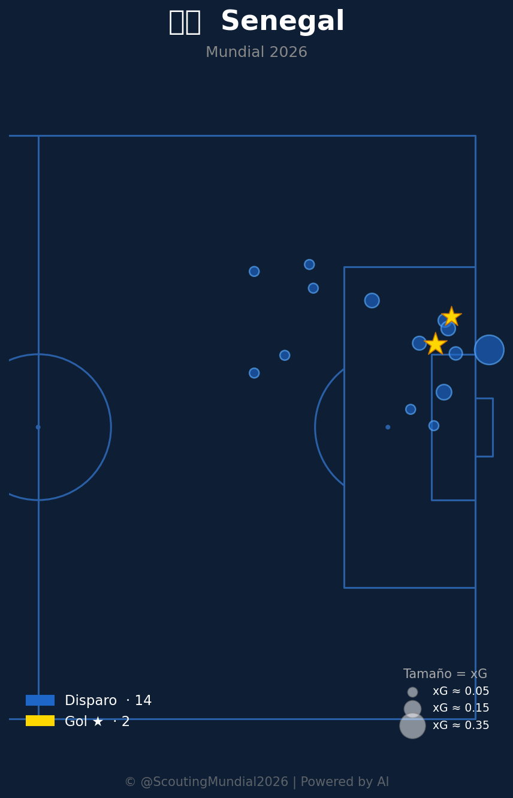

Grupo I
 Senegal
Senegal
Noruega vs Senegal
📅 2026-06-22 · 🕒 19:00 (Local)
Noruega

3 - 2
FINALIZADO
Senegal
📅 2026-06-22 · 🕒 19:00 (Local)
Senegal
El partido cumplió con las expectativas de ser un duelo de estilos sumamente dinámico y ofensivo. Senegal explotó con éxito la velocidad de sus extremos en transiciones directas, desnudando ciertas falencias en la transición defensiva de Noruega. Sin embargo, la jerarquía y control del mediocampo noruego, comandado por Martin Ødegaard, permitió inclinar la balanza territorial a su favor. La presencia letal de Erling Haaland fue el factor determinante del encuentro, capitalizando las jugadas clave para sellar el 3-2 definitivo. Mientras que Senegal demostró un enorme poder físico y verticalidad, Noruega prevaleció gracias a su pegada y a un posicionamiento táctico más sobrio en los momentos de mayor apremio defensivo.
El encuentro se caracterizó por un ida y vuelta electrizante. Noruega dominó el balón y el tempo en los primeros minutos, alcanzando un pico de intensidad ofensiva de 78.0 al minuto 23'. Senegal respondió explotando la velocidad por las bandas y logró revertir el control del juego momentáneamente en la segunda mitad con transiciones rápidas y un pico de intensidad de 82.0 al minuto 65'. Sin embargo, la presión final y el volumen de ataque noruego en el último cuarto de hora (pico de 88.0 en el minuto 81') permitieron a Haaland firmar el gol de la victoria y cerrar un disputado 3-2.

La selección noruega destacó en la creación de juego, impulsada por un sistema de posesión rápido y una alta frecuencia de transiciones lideradas por Martin Ødegaard. El mediocampo noruego mostró una excelente organización y cobertura defensiva, logrando neutralizar varios de los circuitos centrales de Senegal. Sin embargo, Noruega evidenció problemas para mantener la intensidad de la presión a lo largo de todo el encuentro, lo que generó momentos de vulnerabilidad en la transición defensiva, especialmente ante la velocidad de los extremos senegaleses. En la fase de finalización, la contundencia de Erling Haaland en el área fue letal para inclinar el marcador.
Senegal demostró un enorme poder físico y verticalidad en sus ataques. Su plan táctico se basó en transiciones directas explotando la velocidad y capacidad individual de sus extremos, logrando desnudar la espalda de los laterales noruegos en múltiples ocasiones. Defensivamente, el equipo senegalés fue sumamente agresivo en las pérdidas de posesión, complicando la salida limpia de Noruega en zonas estrechas. No obstante, Senegal mostró falencias en la precisión de sus pases en el último tercio y en su estabilidad defensiva al replegarse, concediendo espacios valiosos que fueron castigados por la jerarquía ofensiva de su rival.
El duelo táctico reflejó la efectividad y pegada de Noruega frente a la insistencia y potencia física de Senegal. Aunque Senegal logró inquietar constantemente mediante transiciones rápidas, el control de los tiempos y el posicionamiento táctico más sobrio de Noruega en los momentos de mayor presión defensiva marcaron la diferencia. La soberbia actuación de Ødegaard en la distribución y la letalidad de Haaland de cara a portería terminaron de decidir un vibrante e intenso 3-2 a favor de los europeos.



